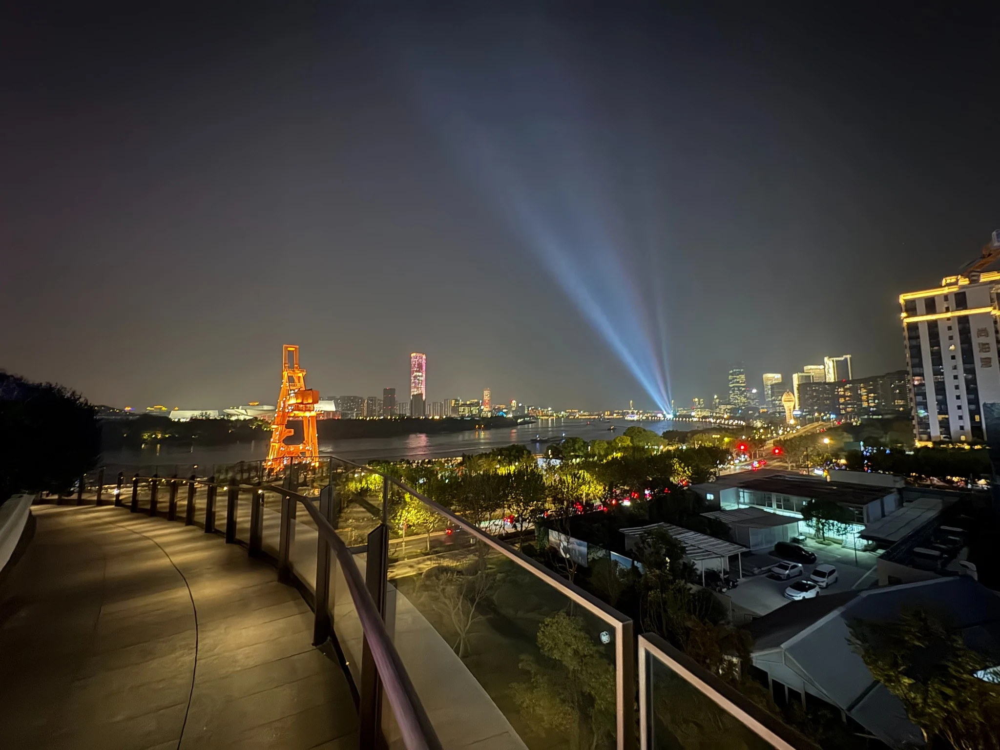
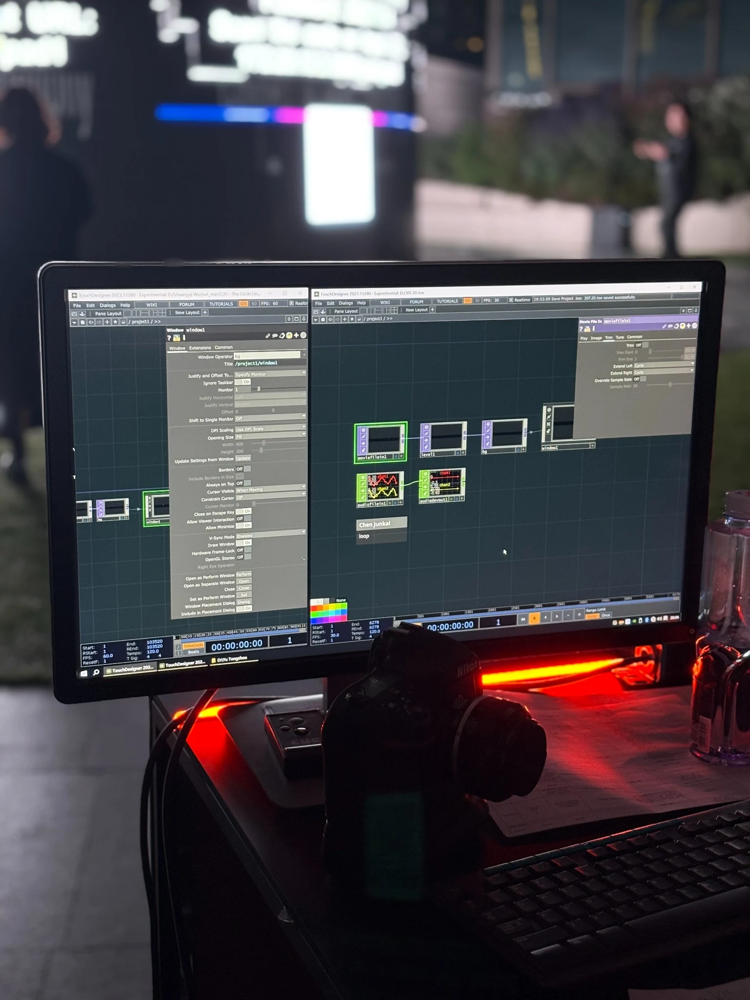
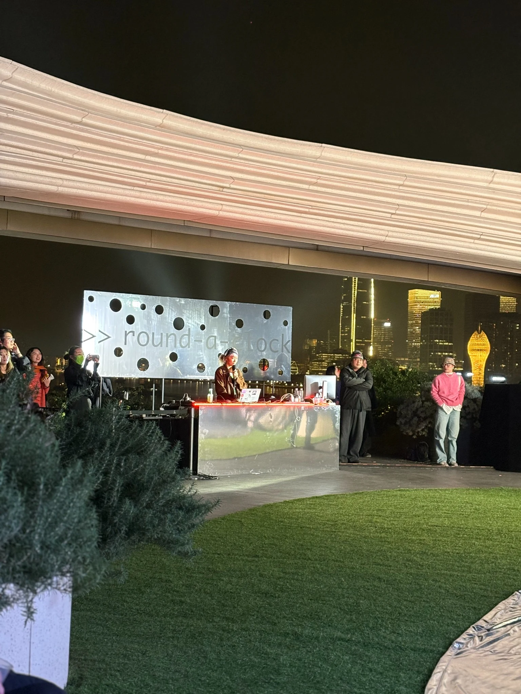
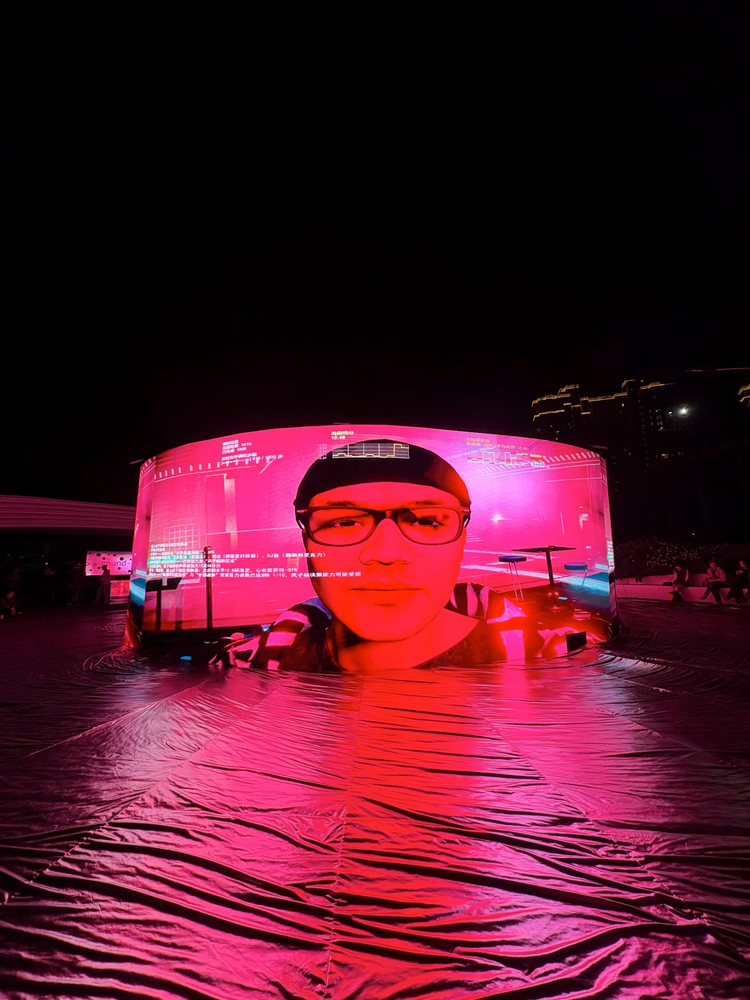
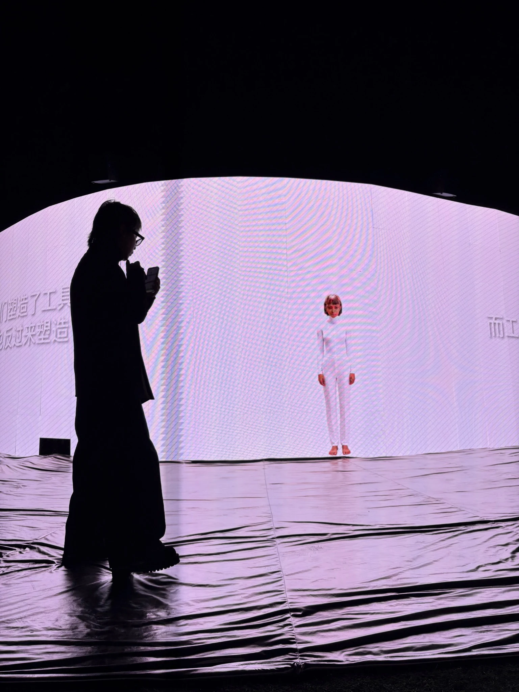
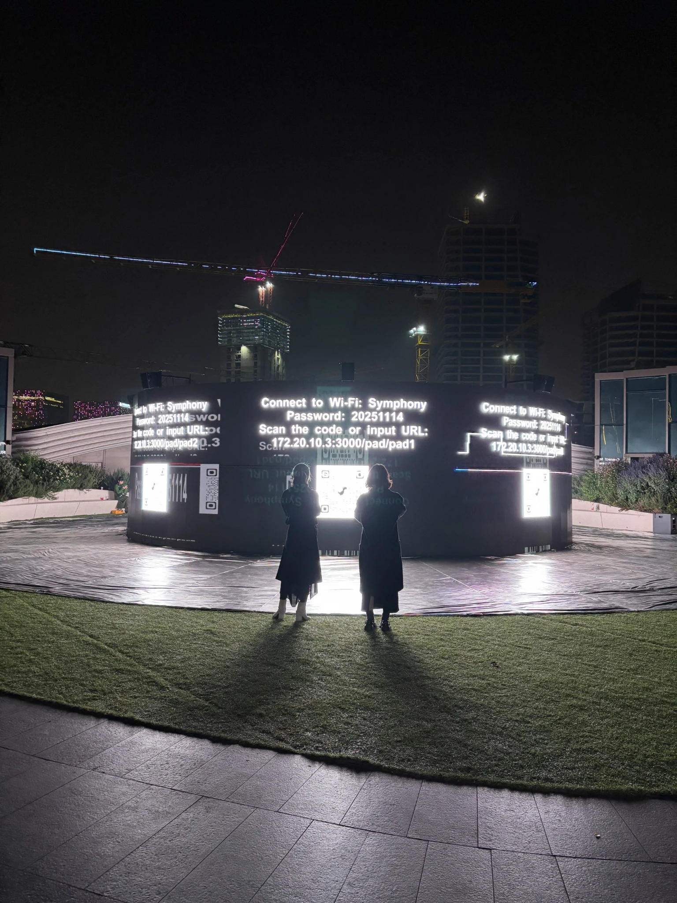
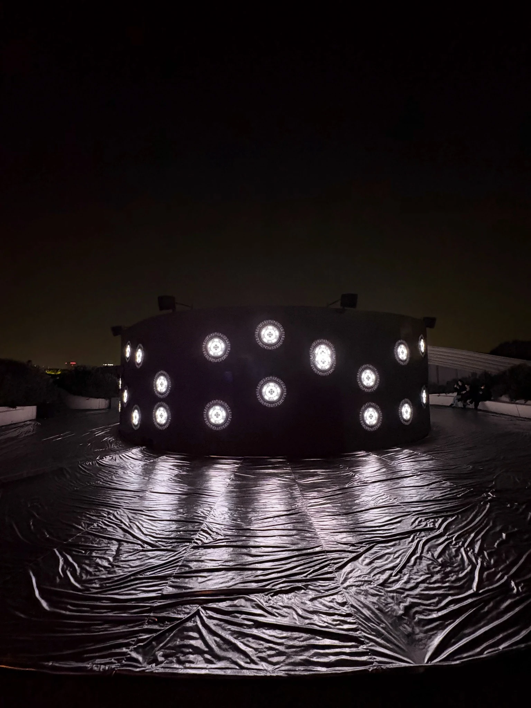

VIRTURA 为 >>round-a-clock 提供媒体系统与活动视觉制作支持，包括部分内容接入、播放测试，以及媒体视觉内容的版式与图像制作。LED 屏幕硬件及显示系统不属于 VIRTURA 的职责。本页仅记录团队实际参与的部分；展览策划与艺术家作品归对应团队及创作者。VIRTURA supported the media workflow and event-visual production for >>round-a-clock, including selected content ingest, playback testing, layout and image work. LED hardware and the display system were outside VIRTURA's scope. This page documents only the team's contribution; exhibition curation and participating works remain credited to their respective teams and artists.
>>round-a-clock
这是一场持续六小时的认知实验。它既是一场实时生成事件，也是技术、身体与认知之间的循环反馈。在六小时的循环中，十二种视角持续展开，由艺术家、研究者与技术系统共同生成。它是一场开放且无法穷尽的存在事件。
This is a six-hour cognitive experiment. It is both a real-time generative event and a cyclical feedback among technology, body, and cognition. Within this six-hour loop, twelve perspectives unfold continuously, co-created by artists, researchers, and technological systems. It is an open and inexhaustible event of existence.
现场记录呈现屏幕系统、技术工作台、实时表演及观众与空间之间的关系。On-site documentation shows the display system, technical desk, live performances and the relationship between audience and space.







把内容、版式与现场播放衔接起来。Connecting content, layout and live playback.
团队围绕环形屏幕画幅完成部分内容接入、播放文件测试、活动标题、名单、致谢与图像素材的版式适配，并提供现场媒体流程支持。VIRTURA 不负责 LED 屏幕硬件或整套显示系统，也不将展览策划与艺术家作品归为自身创作。The team supported selected content ingest, playback-file testing and layout adaptation for event titles, names, acknowledgements and image assets within the circular-screen format. VIRTURA did not provide the LED hardware or the overall display system, and does not claim the exhibition curation or participating artworks as its own.
- 展览Exhibition
- >>round-a-clock 2025 年 11 月 14 日 开幕：16:00>>round-a-clock 14 Nov 2025 Opening: 16:00
- 地点Location
- Orbit · 西岸旋心 · 上海西岸Orbit · West Bund Xuanxin · Shanghai
- 策展人Curator
- SenSendSenSend
- 参展艺术家Participating Artists
- Benjamin Bacon、Daniel Weissglass、Vivian Xu、Hu Rui、ayrtbh、Ziyang Wu、Tonzhou Yu、LiHe、Junkai CHEN + bpi、Zhou Pengan、viola he + v10101a、Shuangqi WuBenjamin Bacon, Daniel Weissglass, Vivian Xu, Hu Rui, ayrtbh, Ziyang Wu, Tonzhou Yu, LiHe, Junkai CHEN + bpi, Zhou Pengan, viola he + v10101a, Shuangqi Wu
- VIRTURA 职责VIRTURA Role
- 媒体系统支持，以及部分视觉内容的版式、图像与活动视觉制作；不含 LED 屏幕硬件与显示系统Media-system support plus layout, image and event-visual production for selected content; excluding LED hardware and the display system